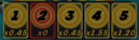

Plinko Pinball
How to Play
| 6. | A ball entering the Free Ball Hole grants you an extra ball! |
| 7. | Once inside the Pinball Arena, the ball can collide with various bumpers and bounce around the board. |
| 8. | Hitting the Bulls Eye or Pin can potentially activate the bonus multiplier, upgrading the multiplier value in the multiplier compartment. |
| 9. | After exiting the Pinball Arena, the balls enter the Plinko zone, bouncing their way down to the bottom. |
| 10. | Each ball drops into a multiplier compartment at the end of the Plinko zone. The multiplier obtained is recorded in  of the Pinball Arena. |
| 11. | The prize for each ball is determined by multiplying its individual bet amount by the corresponding multiplier obtained. |